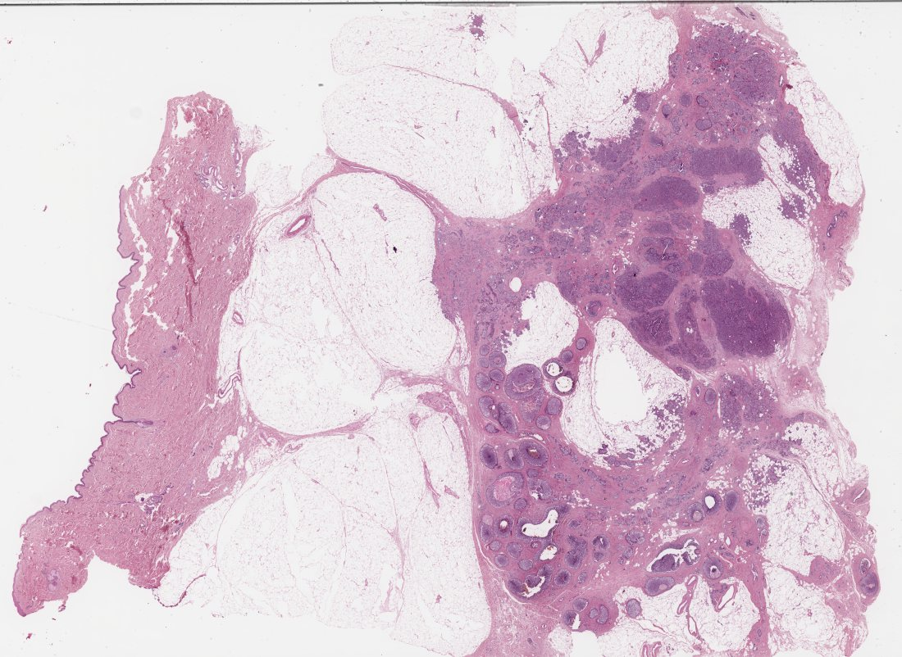
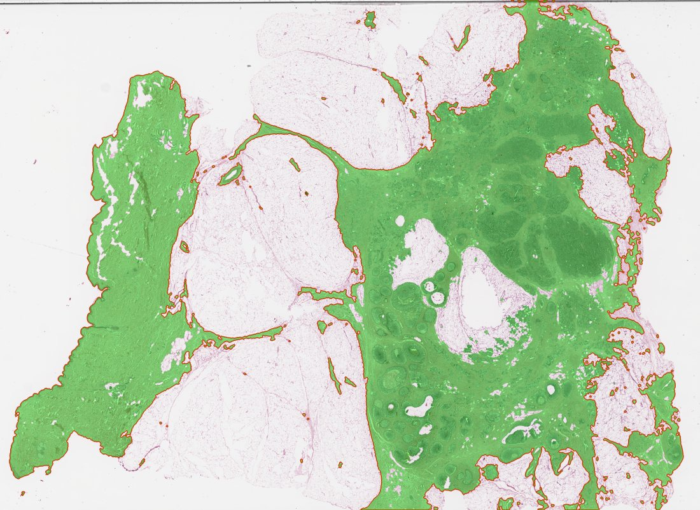
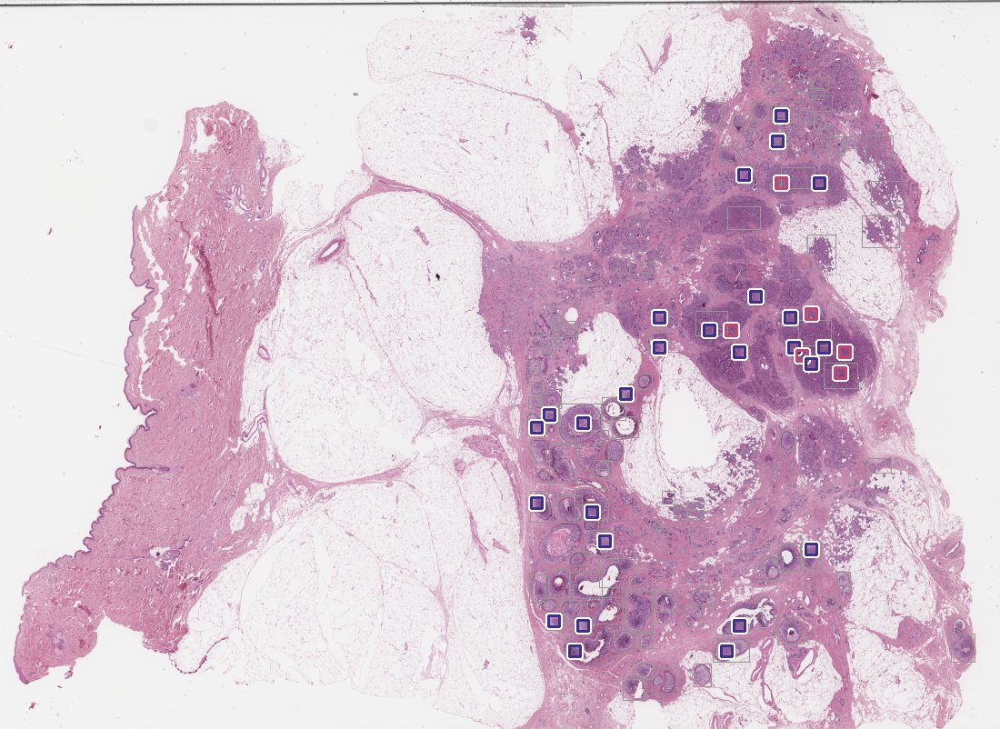
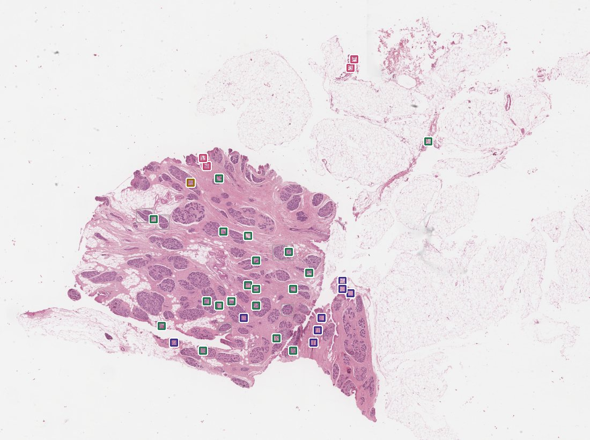
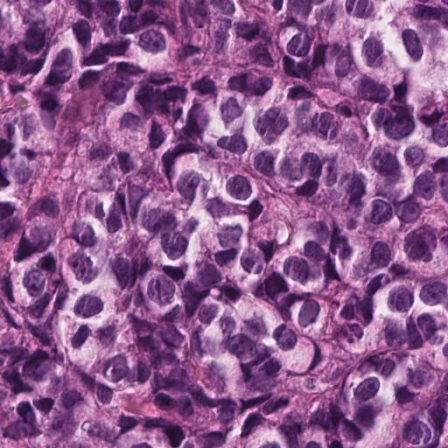
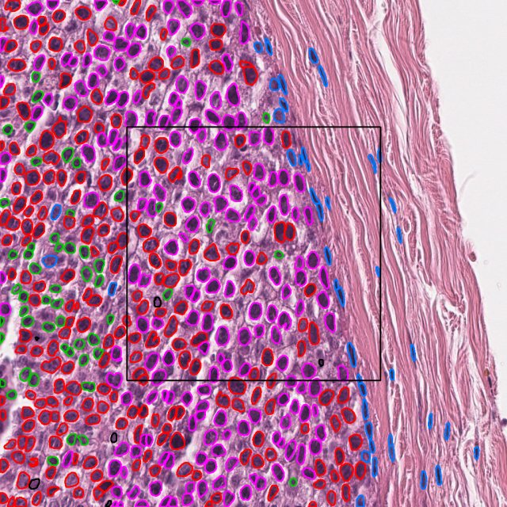
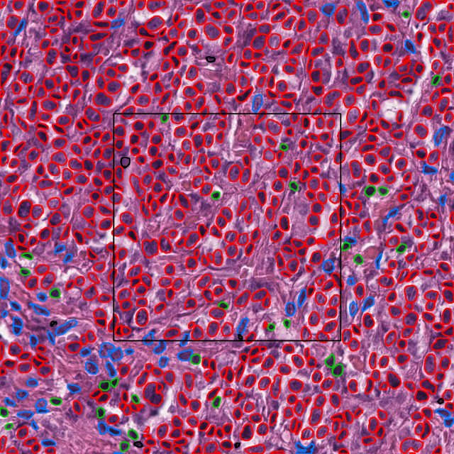

Iniciação Científica · UNICAMP · VLMs na Oncologia
Pipeline Ideia 01: da lâmina inteira ao pré-laudo
Uma lâmina de mama corada em H&E tem dezenas de milhares de pixels de lado. A pipeline a reduz, em cinco estágios, a um texto curto que um modelo de linguagem pequeno, rodando localmente, transforma num rascunho de pré-laudo. Abaixo, cada estágio com o que faz, o que foi testado e o que os números mostram.
18 + 57lâminas do BRACS: 18 de desenvolvimento, 57 do conjunto de teste oficial
0,95AUC DCIS × carcinoma invasivo em outra instituição (BACH)
55,8%acerto do descritor nas 4 classes finais (acaso = 25%)
4 GBde GPU: tudo roda localmente, sem enviar dados do paciente
◇
Dados e como cada teste é feito
Todo teste tem regra e critério de sucesso fixados e registrados em commit antes de rodar, e é avaliado em lâminas que o método não viu.
Conjuntos usados
Conjunto
O que é
Uso
BRACS
547 lâminas de mama, 4.537 regiões anotadas em 7 classes (N, PB, UDH, FEA, ADH, DCIS, IC)
18 lâminas de desenvolvimento e 57 do teste oficial
BACH
Imagens de microscopia de outra instituição (Porto): 100 in situ, 100 invasivo
teste de generalização
NuCLS
1.744 campos de mama do TCGA, ~59 mil núcleos classificados por patologista
validar a segmentação de núcleos
Unidades e métricas
Patch (tile): 512 × 512 px no nível de 40x, ou 128 × 128 µm de tecido.
Acerto por categoria (descritor): média do acerto em cada classe real; com 3 classes o acaso é 33%, com 4 é 25%.
Acerto do pré-laudo (estágio 5): lâminas certas / total de lâminas, e o mesmo por classe; cada linha das tabelas soma as colunas.
AUC: chance de um patch de IC ter pontuação maior que um de DCIS. 0,5 é o acaso, 1,0 é separação perfeita.
Controle com rótulos embaralhados: mostra quanto se acerta só por sorte.
1
Filtro de tecido
Separa tecido de fundo branco pela saturação da cor (limiar de Otsu e operações morfológicas). Só patches com pelo menos 50% de tecido seguem.
Lâmina inteira 41.001 patches na BRACS_748
→
Patches com tecido 15.138 (63% da área era fundo)
resolvido
Quanto das regiões anotadas a máscara cobre
BRACS_748 (98 regiões)96%
16 lâminas, pior caso74%
16 lâminas, melhor caso100%
A exceção (38%) é uma lâmina normal em que a caixa retangular da anotação envolve muito estroma claro em volta de um lóbulo pequeno.

Entrada: miniatura da lâmina BRACS_748 (carcinoma invasivo), reduzida 32 vezes.

Saída: a máscara de tecido (Otsu na saturação + morfologia) sobre a lâmina. Só a área destacada segue para os próximos estágios.
Problemas e desafios
Escolher o filtro: seis foram comparados. Sem verdade de campo, "% de tecido" não dizia qual era melhor; a métrica passou a ser quanto das regiões anotadas a máscara cobre.
Lâminas com pirâmides diferentes (níveis 1/4/8x em vez de 1/4/16/32x) quebravam os scripts; o nível passou a ser escolhido pelo fator de redução.
Estroma muito claro e gordura ficam de fora da máscara. Isso é desejado na maioria dos casos, mas derruba a cobertura em lâminas normais com lóbulos pequenos.
Exemplo de resultado
BRACS_748
patches no nível de 40x: 41.001
patches com ≥ 50% tecido: 15.138 (descarta 63% da área)
regiões anotadas cobertas: 98 de 98 (cobertura média 96%)
2
Roteador
Descrever milhares de patches geraria texto demais. O roteador pontua cada patch e escolhe os 32 mais relevantes, mantendo pelo menos 192 µm entre eles para não ficarem todos no mesmo foco.
Como pontua
Por frases (o atual): similaridade do patch, no QuiltNet, com frases "suspeitas" menos a similaridade com frases "benignas".
UNI2-h "não benigno": probabilidade de não ser benigno, dada por uma camada treinada nas outras lâminas.
UNI2-h por categoria: divide os 32 patches entre as categorias encontradas.
Medido pelas regiões anotadas, o roteador parecia fraco (precisão ~0,2), porque as anotações não marcam toda a lesão. Contando os núcleos tumorais de cada patch escolhido, sem depender das anotações, ele funciona bem nas lâminas malignas.
Fração dos 32 patches com tumor (7 lâminas malignas)
UNI2-h "não benigno"0,88
Por frases (atual)0,86
UNI2-h por categoria0,54
Sorteio0,52
sorteio (0,52)
Em lâminas benignas e atípicas ainda não há uma métrica boa para o roteador.

BRACS_748 (carcinoma invasivo): os 32 patches escolhidos, coloridos pelo que o descritor disse de cada um. Quase todos caem no tumor.

BRACS_1370 (lesão benigna): a maioria dos patches sai benigna (verde), mas 12 saem malignos. Esses falsos positivos chegam até o pré-laudo.
DCIScarcinoma invasivobenignoregião anotada pelo patologista
Problemas e desafios
Orçamento de texto: cobrir mais de 80% das regiões anotadas exigiria 512 patches, cerca de 23 mil tokens, muito acima do que um modelo pequeno lê bem.
A métrica pelas anotações engana: o patologista marca algumas regiões, não toda a lesão, então um patch de tumor fora da anotação conta como erro.
O roteador procura o que parece "suspeito". Em lâminas benignas e atípicas, isso puxa justamente os patches mais parecidos com câncer e alimenta os falsos positivos.
Memória: calcular o QuiltNet em 15 mil patches por lâmina, numa GPU de 4 GB, exigiu rodar um modelo por vez.
Transforma cada patch escolhido em texto. É o estágio com mais testes, porque é onde a separação entre benigno, atípico, DCIS e carcinoma invasivo acontece.
Três métodos
Frases (zero-shot): compara o patch com um banco de frases no QuiltNet. Não usa exemplos rotulados.
Camada treinada: regressão logística sobre o embedding do UNI2-h (1.536 números por patch), treinada nas outras lâminas.
Núcleos (CellViT): fração de núcleos tumorais com um núcleo de estroma a até 20 µm, inspirada na perda da camada mioepitelial no carcinoma invasivo.
Descritor atual: hierárquico com UNI2-h
Primeiro a categoria (benigno, atípico, maligno); se maligno, DCIS ou carcinoma invasivo. Uma tabela fixa transforma o resultado em texto:
DCIS × carcinoma invasivo, em lâmina fora do treino (AUC)
UNI2-h + camada0,96–0,99
QuiltNet + camada0,83–0,95
Núcleos (sem treino)0,66–0,84
Frases (zero-shot)0,50–0,58
acaso (0,5). Barra na média das 3 lâminas com DCIS e IC juntos; controle embaralhado: 0,38–0,46
O mesmo embedding do QuiltNet que fica no acaso com frases chega a 0,83–0,95 com uma camada treinada: a informação estava na imagem; o que falhava era a comparação com texto.
Generalização: treinado no BRACS (Nápoles), testado no BACH (Porto)
UNI2-h + camada0,95
Núcleos (sem treino)0,63
QuiltNet + camada0,57
acaso (0,5); AUC por imagem, sem retreino
Só o UNI2-h mantém o desempenho fora da instituição de origem. O QuiltNet parecia bom no BRACS, mas aprendeu algo específico daquelas lâminas.
Acerto nas 4 classes finais (18 lâminas, lâmina fora do treino)
Método
Benigno
Atípico
DCIS
IC
Média
Hierarquia com frases
57%
46%
16%
50%
42,3%
Hierarquia com UNI2-h
58%
14%
78%
74%
55,8%
O ganho vem dos malignos. O atípico é o ponto fraco: há pouco dado de treino (972 patches, quase todos de 3 lâminas).
Os núcleos medem com precisão? (validação no NuCLS)
CellViT original
Treinado no NuCLS
Núcleos encontrados
82–93%
Tumor: sensibilidade / valor preditivo
0,46 / 0,86
0,83 / 0,88
Estroma: sensibilidade / valor preditivo
0,80 / 0,44
0,72 / 0,52
Medida vs. anotação (Spearman)
0,28
0,35
não passou (critério: Spearman ≥ 0,7)
Medidas mais robustas (distância mediana ao estroma; contato com 3 vizinhos) também ficaram entre 0,27 e 0,37. Decisão: os núcleos servem como sinal, mas o número não vai para o texto do laudo.
Também testado, sem ganho
Trocar frases uma a uma
não se repetiu em lâminas novas
Ensemble de frases
DCIS × IC 0,54–0,57
Média com os 8 patches vizinhos
+3 pontos, só no IC
Tipo de tecido em volta do patch
relação invertida
"Tumor cercado de tumor → IC"
passou, efeito fraco (~55%)
UNI2-h + núcleos juntos
não acrescenta
Contornos oficiais das anotações
a maioria é retângulo
Exemplos de patches e o que o descritor escreveu

certo BRACS_748 (maligno 1.00) ductal carcinoma in situ 0.99
falso positivo BRACS_1370: só estroma e uma fenda no tecido (maligno 1.00) invasive carcinoma 1.00
Núcleos segmentados pelo CellViT

DCIS: o tumor forma um bloco com uma borda única contra o estroma; os núcleos do estroma (azul) ficam enfileirados do outro lado. Fração de núcleos tumorais encostados no estroma: 0,10.

Carcinoma invasivo: ninhos de tumor com filetes de estroma entremeados. Fração: 0,29. Vermelho: neoplásico; magenta: epitelial; azul: conjuntivo; verde: inflamatório.
Problemas e desafios
Comparar imagem com frases fica no acaso para DCIS × IC: algumas frases "ganham" em quase todos os patches, independentemente da imagem.
Ajustar frases olhando as mesmas lâminas superajusta: trocas que subiam o acerto nas lâminas de ajuste não se repetiram em lâminas novas.
O rótulo do BRACS é da região marcada, e a maioria das anotações é um retângulo que inclui estroma junto com a lesão. Quase metade dos patches "DCIS" não tem tumor.
O atípico tem pouco dado (972 patches, quase todos de 3 lâminas) e quase nunca é reconhecido.
O CellViT não tem a classe "mioepitelial" e confunde linfócitos e tumor com estroma; a medida dos núcleos não bate com a anotação de patologistas.
Generalização: o QuiltNet com camada treinada parecia bom no BRACS e caiu para perto do acaso em outra instituição.
Junta os 32 textos num único prompt, com as contagens por categoria e as imagens de 3 patches âncora.
Exemplo de cabeçalho (BRACS_748)
Patches analisados: 32
Patches por categoria: benigno 0, atipico 0, maligno 32
- ductal carcinoma in situ: 26/32 (81%)
- invasive carcinoma: 6/32 (19%)
Componente invasivo: PRESENTE (3 patches, P ≥ 0,90)
Regra do componente invasivo
Na prática, um componente invasivo define o diagnóstico mesmo sendo minoria dos patches. Sem essa regra, o modelo de linguagem seguia a maioria. Com ela, o prompt diz se há componente invasivo (pelo menos 2 patches de carcinoma invasivo com probabilidade ≥ 0,90) e lembra que ele define o diagnóstico.
Problemas e desafios
O limiar da regra (2 patches, probabilidade ≥ 0,90) foi fixado por critério, sem ajuste. Ele marcou componente invasivo em 10 das 18 lâminas de desenvolvimento, quando só 5 eram de carcinoma invasivo.
A regra propaga os falsos positivos do descritor: lâminas atípicas com patches "invasivos" passam a ser apresentadas como carcinoma invasivo.
As contagens por categoria dependem dos 32 patches escolhidos pelo roteador, que puxa o que parece suspeito; a proporção de patches não representa a lâmina inteira.
Um modelo de linguagem local (Gemma 3 4B, via Ollama) lê o prompt e as imagens e escreve o rascunho, com impressão diagnóstica, grau de confiança, regiões para revisão e limitações. O rótulo real nunca vai para o modelo.
Teste da regra, nas 15 lâminas fora das usadas para criá-la
Com a regra10/15
Sem a regra5/15
acaso (25%, 4 classes)
Benigno
Atípico
DCIS
IC
Total
Sem a regra
1/4
0/6
1/1
3/4
5/15
Com a regra
4/4
1/6
1/1
4/4
10/15
Cada célula: lâminas certas / lâminas daquela classe. O total é a soma das colunas.
passou: IC 3 → 4 de 4; benignas 1 → 4 de 4
Teste externo: 57 lâminas do conjunto de teste oficial
passou no critério por pouco · 57 lâminas de 31 pacientes nunca usados
Com a regra16/57
Sem a regra13/57
acaso (25%, 4 classes)
Benigno
Atípico
DCIS
IC
Total
Sem a regra
0/13
1/24
7/8
5/12
13/57
Com a regra
0/13
1/24
8/8
7/12
16/57
Respostas malignas
55/57
Cada célula: lâminas certas / lâminas daquela classe (13 + 24 + 8 + 12 = 57). Com a regra: 0 + 1 + 8 + 7 = 16 certas.
A regra ajuda no carcinoma invasivo (5 → 7 de 12), mas a pipeline chama de maligno 55 das 57 lâminas. O ganho nas benignas visto no desenvolvimento não se repetiu. O problema vem antes do modelo de linguagem: o roteador busca o que parece suspeito e o descritor quase nunca diz "atípico".
Como o modelo de linguagem se comporta
Sem a regra, é alarmista: nas 18 lâminas de desenvolvimento, chamou de maligno 17, quando só 7 eram. No teste externo, com ou sem regra, chamou de maligno 55 de 57.
Repete os falsos positivos do descritor: numa lâmina benigna com 12 patches "malignos", o MedGemma afirmou carcinoma com confiança alta.
O Gemma 3 prioriza melhor que o MedGemma (3 regiões, não 32), é mais cauteloso e mais rápido.
Não segue bem instruções de formato: a classificação final precisou ser extraída por uma segunda chamada, em formato restrito.
Exemplos de pré-laudo (trechos reais, Gemma 3 4B)
certo
BRACS_1489 · rótulo real: DCIS
## Impressão diagnóstica sugerida
Moderada. A alta prevalência de DCIS (84%) sugere uma
avaliação mais aprofundada para determinar o grau e a
extensão da doença. A presença de patches com categorias
de "atípico" e "invasivo carcinoma" requer investigação
adicional.
## Regiões para revisão prioritária
[99840,17408] – Patch com alta probabilidade de DCIS (1.00).
[117248,24064] – Patch com alta probabilidade de DCIS (1.00).
Classificação extraída: DCIS
certo, com a regra
BRACS_1641 · rótulo real: tecido normal
## Impressão diagnóstica sugerida
Baixo (devido à predominância de tecido benigno e à baixa
probabilidade da lesão atípica). A evidência atual não
suporta a presença de carcinoma invasivo.
## Regiões para revisão prioritária
[59392,52736] - Probabilidade de 0.97 para lesão epitelial
atípica, necessita de avaliação mais detalhada.
Classificação extraída: benigno
Problemas e desafios
Hardware: numa GPU de 4 GB, só parte do modelo cabe na placa; o resto roda na CPU. Cada pré-laudo leva de 1 a 4 minutos.
Memória: o servidor do Ollama acumulava cache a cada pré-laudo até travar o computador; o modelo passou a ser descarregado após cada chamada.
O modelo herda os erros do descritor: com patches malignos falsos, ele escreve "carcinoma".
Confunde "81% dos patches" com "81% de probabilidade" e às vezes lista todos os patches como prioritários.
Extrair a classificação é parte do problema. Na BRACS_1641 sem a regra, o texto diz "a predominância de tecido benigno sugere uma avaliação de lesão benigna", mas a extração em formato restrito devolveu DCIS. Numa conferência de 20 pré-laudos sorteados, a extração bateu com o texto em 8, contrariou o texto em 2 e, em 10, o texto não se decidia por uma classe e a extração escolheu DCIS.
O modelo raramente se compromete: em metade dos pré-laudos conferidos, escreve algo como "a predominância de tecido benigno sugere benignidade, no entanto a presença de DCIS requer investigação". Vários desses casos têm evidência com maioria de patches benignos; poucos patches malignos bastam pra lâmina virar maligna.
extração divergente
BRACS_1641 sem a regra · rótulo real: tecido normal
## Impressão diagnóstica sugerida
Baixo (6% de patches atípicos) – A predominância de tecido
benigno sugere uma avaliação de lesão benigna. A presença
de duas lesões atípicas requer investigação adicional.
Classificação extraída: DCIS ← não bate com o texto
Onde a pipeline está
Estágio
Situação
Próximo passo
1. Filtro de tecido
resolvido
—
2. Roteador
bom em lâminas malignas
métrica para lâminas benignas e atípicas
3. Descritor
bom no DCIS × IC, fraco no atípico
mais lâminas atípicas para treinar
4. Agregação
regra ajuda no IC
decidir a classe final por regra explícita sobre as proporções de patches
5. Síntese
28% em lâminas novas
reduzir os falsos positivos malignos nos estágios 2 e 3
Ressalvas gerais: 2 lâminas por classe no desenvolvimento; as anotações do BRACS marcam regiões, não cada célula; o rótulo da lâmina é o da lesão mais grave.